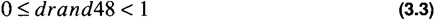

by Alan Parker
CRC Press, CRC Press LLC
ISBN: 0849371716 Pub Date: 08/01/93
|
|
Algorithms and Data Structures in C++
by Alan Parker CRC Press, CRC Press LLC ISBN: 0849371716 Pub Date: 08/01/93 |
| Previous | Table of Contents | Next |
The square packing problem is as follows:
A given instance for the square packing problem is shown in Figure 3.11. For this figure the list of squares provided have sides
1,1,1,1,1,2,3,3,3,3,6
An optimal solution as shown in the figure packs the squares into a 9x9 square. A C++ source program implementing the simulated annealing algorithm for the square packing problem is shown in Code List 3.36. The output of the program is shown in Code List 3.37.
This section describes the program. The description begins with the start of the file and proceeds forward.
The program includes a number of files to support the functions in the program. Of importance here is the inclusion of <sys/time.h>. This is machine dependent. This program may have to be modified to run on different platforms. At issue is the conformance to drand48() and associated functions as well as the time structure format.
The function drand48() returns a double random number satisfying

srand48() is used to seed the random number generator. The defined constants are shown in Table 3.1.
| Constant | Meaning |
|---|---|
| NO_SQUARES | The number of squares in the problem |
| SQUARE-SIZE-LIMIT | The maximum size of the square. The squares that are generated will have sides from 1 to SQUARE_SIZE_LIMIT. This is used when the initial linked list is generated with random square sides. |
| INITIAL_TEMPERATURE | The initial temperature in the simulated annealing process. |
| R | The temperature cooling ratio. The temperature is cooled by this factor each time NO_STEPS have been performed. |
| NO_ITERATIONS | The number of times to cool. This is the number of times the temperature is reduced by a factor of R. |
| NO_STEPS | This is the number of steps in the algorithm to perform at the fixed temperature. |
| PLUS | This is the representation for the PLUS operator which is used to represent when blocks are placed on top of each other. |
| TIMES | This is the representation for the TIMES operator which is used to represent when blocks are placed next to each other. |
| TEST | When this is defined the test data, for which the optimal solution is known, is used. |
The representation used in the program for placing the squares is a stacked base approach. Squares placed on top of each other are noted with a +. Squares placed next to each other are noted with a *.
The notation 1 2 * means square 2 to the right of 1. The notation 1 2 + means square 1 on top of 2. The notation is unraveled in a stack base manner so to evaluate the meaning of 0 1 2 3 *4 + * + you push each of the elements on the stack and when you encounter an operation you remove two elements from the stack and replace it with the modified element. The array results in the operation in Table 3.2:
| Representation | Meaning |
|---|---|
| 0 1 2 3 * 4 + * + | Original Array |
| 0 1 5 4 + * + | Block 5 created which is composed of block 2 next to 3 |
| 0 1 6 * + | Block 6 created which is composed of block 5 on top of 4 |
| 07 + | Block 7 created which is block 1 next to 6 |
| 8 | Block 8 created which is block 0 on top of 7 |
A possible notation, for instance, for Figure 3.11, is
| 0 | 1 | 2 | + | * | 5 | + | 6 | + | 8 | 9 | * | 10 | * | + | 3 | 4 | * | 7 | + | * |
This would represent the square packed into the 9x9 square. Notice that each of the blocks above contain a number or an operation. The program elects to define the + operation as the number NO_SQUARES and the TIMES operation as the NO_SQUARES+1. As a result the valid representations will be the numbers 0-12.
Two stacks are defined in the program, one to store the current x width of a box and the current y width. This is needed because when you combine squares of different sizes you end up with a rectangle. If you combine a 1x1 with a 2x2 you will end up with a 3x2 or a 2x3.
The test data is initially stored as
| 0 | 1 | 2 | 3 | 4 | 5 | 6 | 7 | 8 | 9 | 10 | * | + | * | + | * | + | * | + | * | + |
| Previous | Table of Contents | Next |